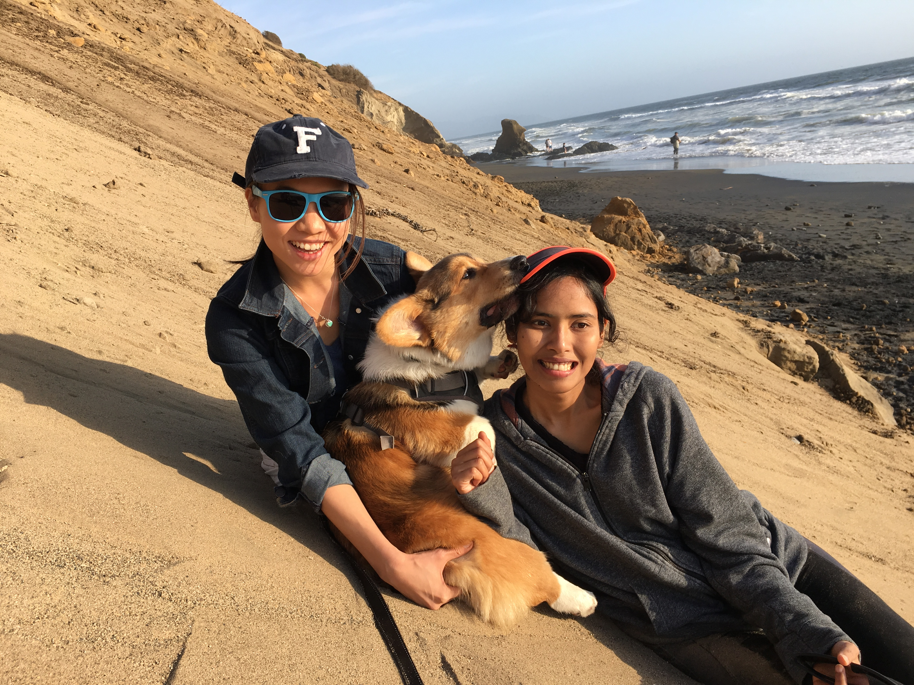

They're good dogs Bront
Hi. My name is Jatuporn Toy Leksut. I'm a PhD student at USC's Computer Vision Lab. My research interests include Computer Vision ∩ Computer Graphics, Face Recognition, and Facial Expression Analysis.
Hi. My name is Jatuporn Toy Leksut. I'm a PhD student at USC's Computer Vision Lab. My research interests include Computer Vision ∩ Computer Graphics, Face Recognition, and Facial Expression Analysis.
Collection of Science Tweets
A quick look at my academic journey